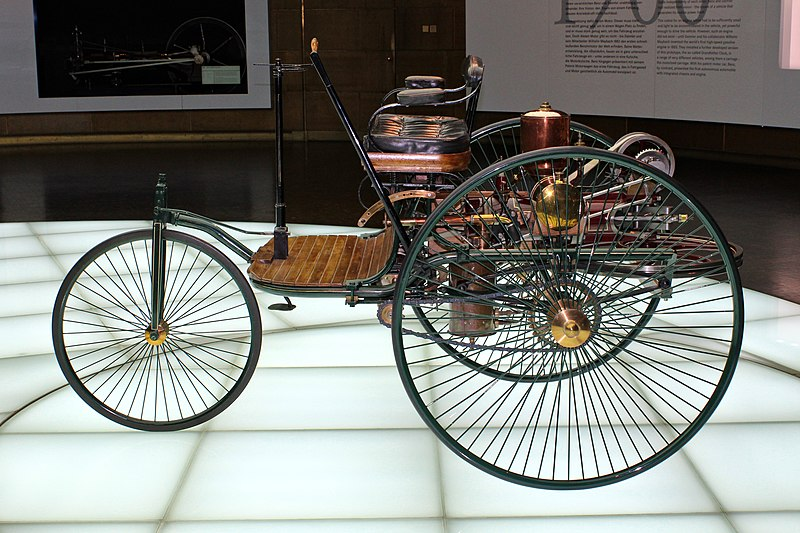
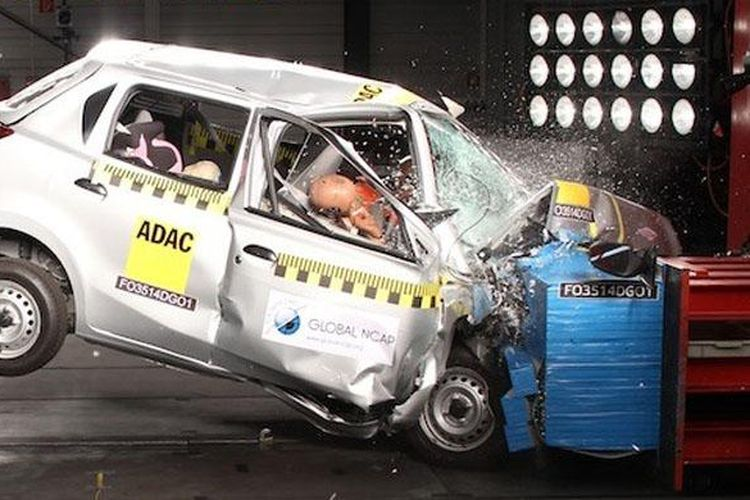
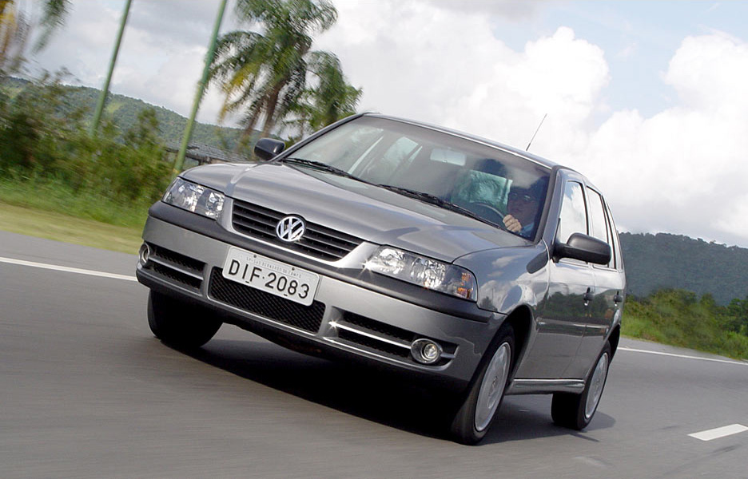
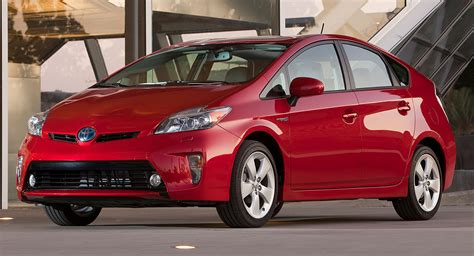
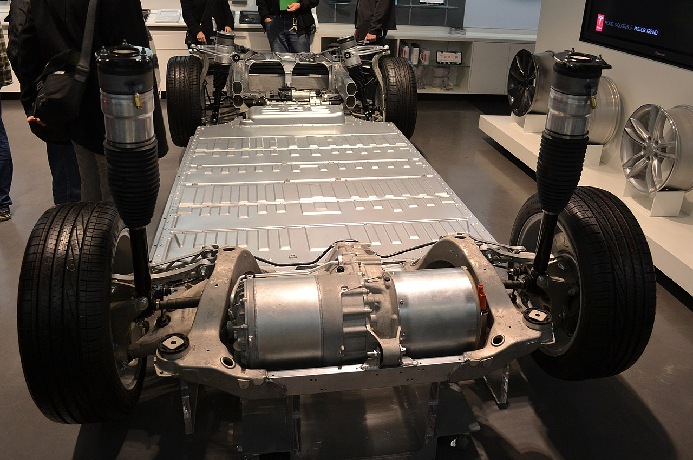

Sejarah

Umumnya mobil pertama dengan mesin pembakaran dalam yang menggunakan
bensin dibuat hampir bersamaan pada 1886 oleh penemu Jerman yang
bekerja secara terpisah. Karl Benz pada 3 Juli 1886 di Mannheim, dan
Gottlieb Daimler dan Wilhelm Maybach di Stuttgart.
Setelah 1930, jumlah produsen mobil berkurang drastis berpasan
dengan industri saling bergabung dan matang. Sejak 1960, jumlah
produsen hampir tetap, dan inovasi berkurang. Dalam banyak hal,
teknologi baru hanya perbaikan dari teknologi sebelumnya. Dengam
pengecualian dalam penemuan manajemen mesin, yang masuk pasaran pada
1960-an, ketika barang-barang elektronik menjadi cukup murah untuk
produksi massal dan cukup kuat untuk menangani lingkungan yang kasar
pada mobil. Dikembangkan oleh Bosch, alat elektronik ini dapat
membuat buangan mobil berkurang secara drastis sambil meningkatkan
efisiensi dan tenaga.
Keamanan

Kecelakaan mobil hampir sama tua dengan mobil itu sendiri. Joseph
Cugnot menabrak tembok dengan mobil tenaga-uapnya "Fardier" pada
1770. Kecelakaan mobil fatal pertama kali yang dicatat adalah
Bridget Driscoll pada 17 Agustus 1896 di London dan Henry Bliss pada
13 September 1899 di New York City.
Riset awal memfokuskan pada peningkatan rem dan mengurangi bahaya
api pada sistem bahan bakar. Riset sistematik dalam keamanan
tabrakan dimulai pada 1958 di Ford Motor Company. Sejak itu, banyak
riset memfokuskan pada penyerapan energi luar dengan panel yang
mudah hancur dan mengurangi gerakan manusia pada ruang penumpang.
Meskipun terjadi peningkatan dalam teknologi keselamatan, angka
kematian dari kecelakaan mobil tetap tinggi, di AS sekitar 40.000
orang meninggal setiap tahun, angka yang tetap bertumbuh sesuai
dengan peningkatan populasi dan perjalanan, dengan tren yang sama di
Eropa. Angka kematian diperkirakan akan menjadi dua kali lipat di
seluruh dunia pada 2020. Angka yang lebih banyak dari kematian
adalah luka dan cacat.
Bahan Bakar
Bahan Bakar Fleksibel

Kendaraan bahan bakar fleksibel atau kendaraan bahan bakar ganda
adalah kendaraan bahan bakar alternatif dengan mesin pembakaran
dalamnya yang didesain bisa menggunakan lebih dari 1 jenis bahan
bakar, biasanya adalah bensin yang dicampur dengan etanol ataupun
metanol. Mesin-mesin berbahan bakar fleksibel modern dapat
menggunakan bahan bakar dengan campuran berapa saja di dalam ruang
bakarnya karena injeksi dan waktu percikannya sudah diatur
otomatis oleh sensor elektronik.
Contoh untuk mobil berbahan bakar fleksibel yaitu VW Gol 1.6 Total
Flex 2003 merupakan mobil pertama yang berbahan bakar fleksibel
yang bisa berjalan dengan campuran bensin dengan etanol.
Bahan Bakar Alternatif

Kendaraan bahan bakar alternatif adalah kendaraan yang dapat
beroperasi menggunakan bahan bakar selain bahan bakar minyak
"tradisional" (bensin atau diesel); dan juga merujuk untuk segala
macam teknologi mesin kendaraan yang tidak beroperasi dengan
bensin, contohnya mobil elektrik, kendaraan elektrik hibrida atau
kendaraan energi surya. Karena kombinasi beberapa faktor, misalnya
kepedulian lingkungan, tingginya harga minyak, adapnya
pengembangan bahan bakar alternatif yang lebih ramah lingkungan,
maka pengembangan kendaraan bahan bakar alternatif telah menjadi
prioritas utama bagi pemerintah dan produsen otomotif di banyak
negara di dunia.
Kendaraan elektrik hibrida seperti Toyota Prius sebenarnya
bukanlah kendaraan bahan bakar alternatif, tetapi karena teknologi
yang canggih pada baterai elektriknya, maka mobil ini dapat
menggunakan bahan bakar dengan sangat efisisen. Usaha penelitian
dan pengembangan energi alterantif lainnya berfokus pada kendaraan
elektrik baterai dan kendaraan sel bahan bakar.
Mobil Listrik

Mobil listrik adalah mobil yang digerakkan dengan motor listrik,
menggunakan energi listrik yang disimpan dalam baterai atau tempat
penyimpan energi lainnya. Mobil listrik sangat populer pada akhir
abad ke-19 dan awal abad ke-20, tapi kemudian popularitasnya meredup
karena teknologi mesin pembakaran dalam yang semakin maju dan harga
kendaraan berbahan bakar bensin yang semakin murah. Krisis energi
pada tahun 1970-an dan 1980-an pernah membangkitkan sedikit minat
pada mobil-mobil listrik, tapi baru pada tahun 2000-an lah para
produsen kendaraan baru menaruh perhatian yang serius pada kendaraan
listrik listrik.
Sampai bulan Novemver 2011, model-model listrik yang tersedia dan
dijual di pasaran beberapa negara adalah Tesla, Renault,
Mitsubishi, Nissan. Nissan Leaf dengan penjualan lebih dari 20.000
unit di seluruh dunia, dan Mitsubishi i-MiEV, dengan penjualan
global lebih dari 17.000 unit adalah kedua mobil listrik paling
laris di dunia.